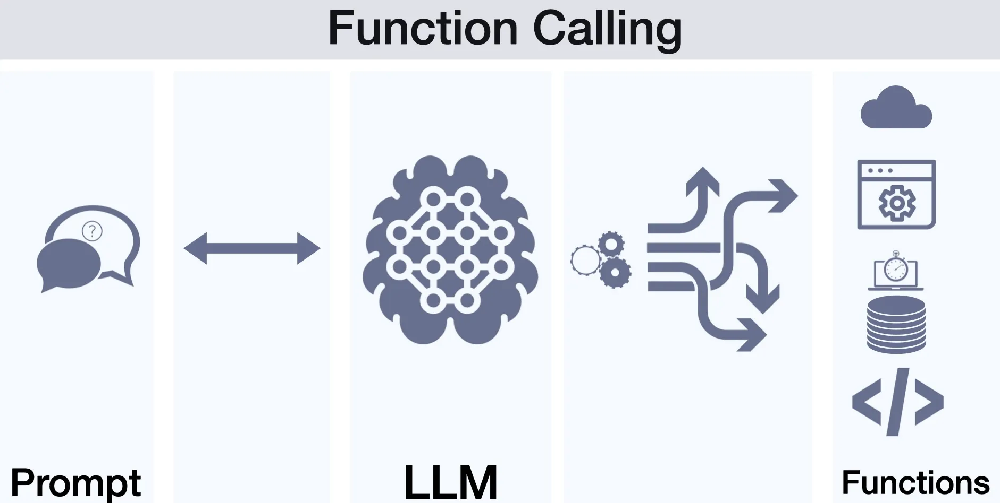

What is Function Calling?
A mechanism for the model to request a specific action from your application. You define a set of available functions (tools) that the model can use.
When the model needs one, it outputs a FunctionCall object. This includes the function's name and the arguments it should be called with.
It follows a request/response pattern. Your code executes the function and sends the result back to the model, which then continues the conversation.

Function calling workflow